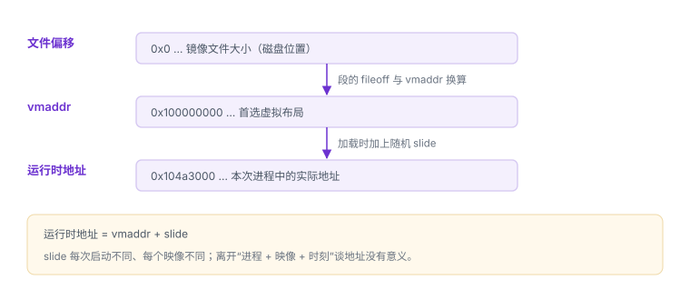

地址随机化与运行地址
slide 把“文件里的地址”换算成“这次运行的地址”
地址随机化改变映像在进程地址空间中的落点。它不是加密，也不是完整性保护，而是一种提高预测成本的防御措施；理解它，首先要理解“同一条指令在每次运行中地址不同”这件事如何影响分析。
1. 换算公式
对每个映像，加载器会给出一个偏移量（slide）。同一条指令的运行时地址为：
运行时地址 = 映像首选虚拟地址（vmaddr） + slideslide 在每次进程启动时不同，同一进程内每个映像的 slide 也不同。因此“这条指令的地址”只在特定进程、特定映像下成立。
| 坐标 | 来源 | 是否稳定 |
|---|---|---|
| 文件偏移 | 文件布局 | 同一产物内稳定 |
| vmaddr | Mach-O 首选布局 | 随构建变化 |
| 运行时地址 | 本次映射 | 每次启动不同 |
slide 属于映像
同一进程里每个映像的 slide 不同，把一个映像的基址套到另一个上，符号化结果会完全错位。
同一进程里每个映像的 slide 不同，把一个映像的基址套到另一个上，符号化结果会完全错位。
2. 三种坐标的换算
| 已知 | 求 | 做法 |
|---|---|---|
| 运行时地址 | 对应源码位置 | 用映像列表确定该地址所属映像与基址，再交给符号化工具 |
| 崩溃报告中的地址 | 源码位置 | 报告已给出映像基址与 UUID，直接按 UUID 找符号文件 |
| 反汇编里的地址 | 文件偏移 | 用所属段的 vmaddr 与 fileoff 差值换算，注意段边界 |
手工计算容易错在“用了错误的基址”：把主程序基址套到系统库地址上，结果会指向完全无关的函数。

3. 原理推演：slide 为什么必须是页的整数倍
内存映射与权限都以页为单位：同一页只能有一套权限位，不能“前半页只读、后半页可写”。若随机偏移不是 16 KB 的倍数，段边界就会落在页中间，段与段之间原本不同的权限无法分别设置。
所以随机化粒度只能是页：slide = 页大小 × 随机页数。这条约束同时解释了两个现象：地址低 14 位在页内保持不变；以及手工换算时若把 slide 当成任意数，结果会对不齐。
4. 哪些区域被随机化
- 主程序映像：位置无关可执行文件在加载时被放到随机基址。
- 动态库与框架：各自独立随机，共享缓存内的库同样按布局随机。
- 堆与栈：起始位置随机，配合页级保护与边界检查使用。
随机化以页为粒度，因此低若干位在页内是稳定的；这既是分析时的可利用规律，也是攻击者缩小猜测范围的依据。
5. 对调试与崩溃分析的影响
查看映像基址与 slide（自有程序）
#include <mach-o/dyld.h>
#include <stdio.h>
int main(void) {
intptr_t slide = _dyld_get_image_vmaddr_slide(0);
const void *header = _dyld_get_image_header(0);
printf("image0 header=%p slide=%#lx\n", header, (unsigned long)slide);
return 0;
}连续运行数次，观察 header 与 slide 变化。再用调试器的映像列表查看同一进程内多个库的基址，理解“每映像独立随机”。
6. 用 atos 手工符号化一帧
按镜像加载地址换算符号
atos -o YourApp.app/YourApp -arch arm64 -l 0x100000000 0x100004a1c
dwarfdump --uuid YourApp.app/YourApp-l 必须是该映像在报告中的加载地址（相当于本次 slide 后的基址），不是首选地址。填错基址会得到看似合理但完全错误的结果。
7. 局限与配套措施
- 随机化只增加预测成本。存在信息泄露或可反复尝试时，保护强度下降。
- 它不修复越界写、释放后使用等缺陷；这些需要内存安全语言、边界检查与运行时诊断。
- 应与代码签名、沙盒、最小权限、W^X 一起使用，构成纵深防御。
8. 可验证实验
- 连续启动同一自有程序 5 次，记录映像基址与 slide，确认每次不同。
- 制造一次崩溃，从报告中取出映像基址与崩溃地址，手工计算偏移，再用工具符号化，核对结果。
- 故意用首选地址代替加载地址做一次符号化，记录错误结果，理解“基址用错”的典型表现。
9. 数据细节：slide 的几个性质
| 性质 | 说明 | 分析时的含义 |
|---|---|---|
| 按映像独立 | 每个镜像有自己的 slide | 不能把一个基址套到另一个 |
| 按页对齐 | 16 KB 粒度 | 地址低位有规律 |
| 每次启动变化 | 重启后不同 | 静态地址不能直接下断点 |
| 可被读取 | 运行时可从映像信息取得 | 脚本能自动换算 |
10. 一次真实排查记录：符号化结果整体偏移
- 现象：符号化得到的函数名都“差一点”，指向相邻函数。
- 先查基址：是否把主程序基址用到了系统库地址上。
- 再查 slide：是否用了上一次启动的值。
- 验证：用报告里的镜像 UUID 与加载地址重算一次，看是否对齐。
- 结论与限制：记录“基址用错”，并注明结论只对本次运行成立。
11. 自测
- slide 的作用是什么？为什么每个映像的 slide 不同？
- 为什么不能把一次运行的地址直接用于下一次运行的分析？
- ASLR 能防什么、不能防什么？